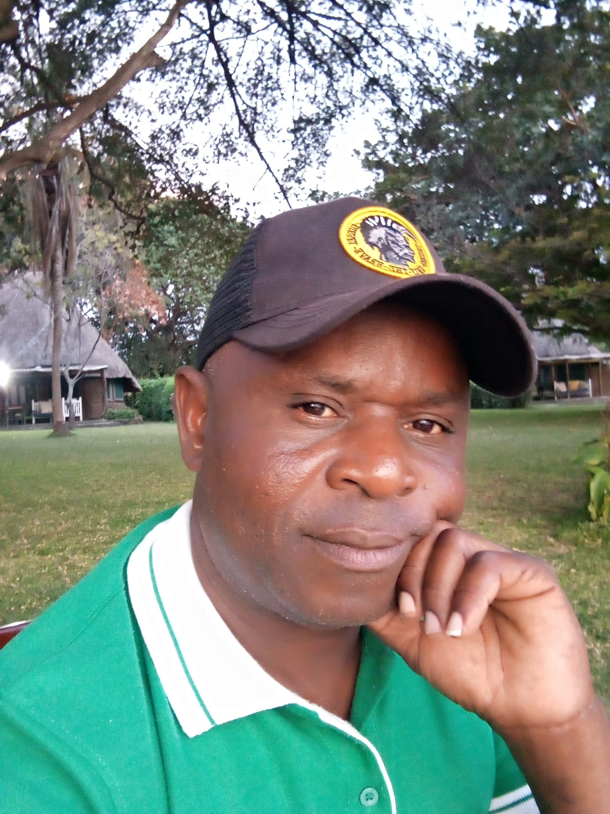
Ramanus Abade
Director
Joseph Odoyo
Assistant Director
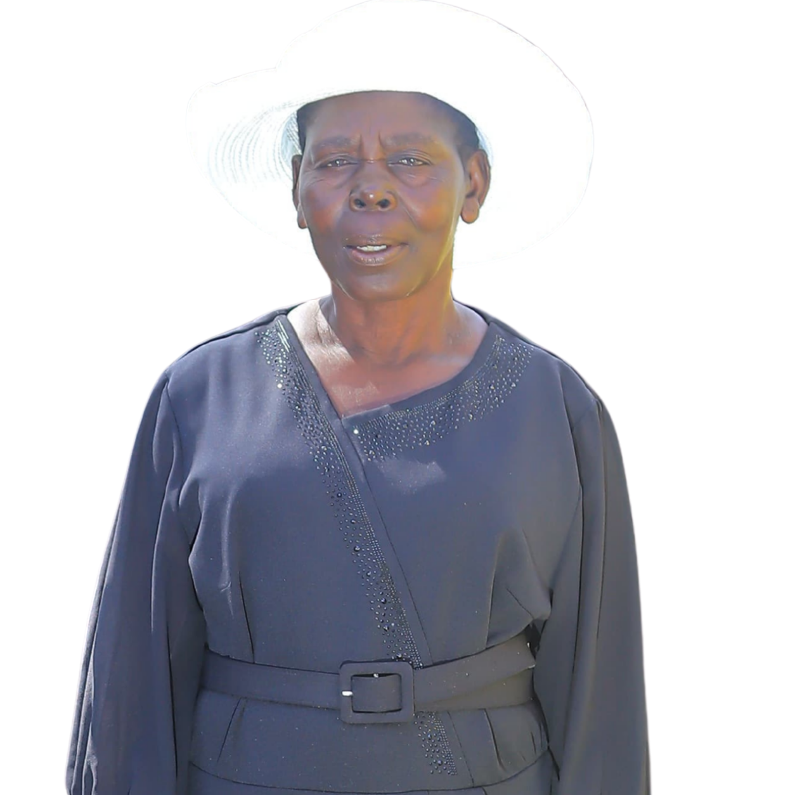
Margret Akinyi
Leader

Linet Achieng
Groups Leader

Nadia Venessa
Unit Leader
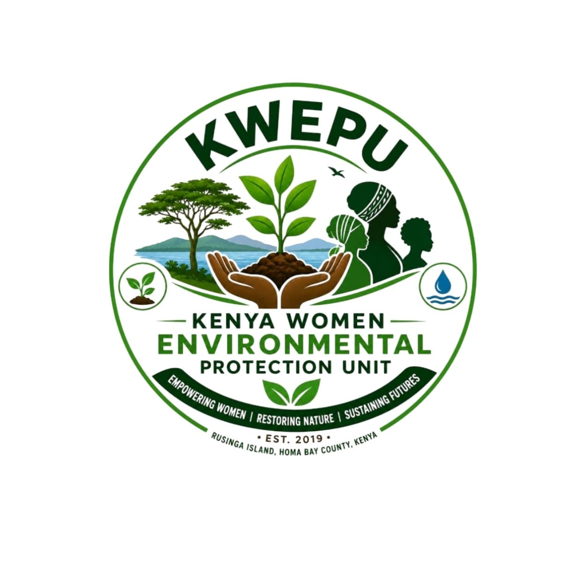
Building a greener and more resilient future
KWEPU was established in 2019 in Rusinga, Homa Bay County, Kenya. We work with communities and schools to protect the environment, restore landscapes and promote sustainable livelihoods.
Building a greener, sustainable and more resilient future through community-led environmental action.
To build greener, resilient and sustainable communities where people, especially women and young people, actively protect the environment, strengthen sustainable livelihoods and create lasting social and environmental impact.
Promote tree production, tree planting, ecosystem restoration, nature conservation and practical climate action.
Advance agroforestry, kitchen gardens, sustainable agriculture and environmentally responsible food production.
Strengthen environmental and climate-change education in schools and communities through practical learning and awareness programmes.
Engage women, young people, schools and community groups in environmental leadership, skills development and sustainable livelihoods.
Equip communities with practical knowledge and skills that support long-term environmental stewardship and resilient livelihoods.
Build long-term local and international partnerships that encourage intercultural learning, volunteer service, knowledge exchange and community-led development.
Restoring schools and community landscapes through tree planting and environmental education.
Supporting local tree production and increasing access to suitable indigenous and fruit trees.
Promoting gardens and farming systems that combine food production with environmental restoration.
Working with schools and communities to create long-term environmental stewardship.
Trees planted at Eddy Memorial School.
Trees planted at Kamasengre School.
Community-led environmental action in Rusinga.
Meet the people serving Kamayoge Women Environmental Protection Unit through leadership, staff support and volunteer service.

Director
Assistant Director

Leader
Groups Leader
Unit Leader
KWEPU welcomes long-term partnerships with volunteer-sending organizations, including German weltwärts organizations, and international volunteers interested in environmental conservation, climate action, sustainable agriculture, schools, youth and community development.
Volunteers can support tree nursery management, seedling propagation, tree planting, agroforestry, kitchen gardens, school environmental programmes, youth engagement, community outreach, project documentation and environmental awareness activities.
KWEPU has secure hostel accommodation with capacity for up to six volunteers. We provide local orientation, community integration, project supervision, guidance on local culture and practices, and support throughout the placement.
KWEPU can coordinate volunteer arrival and onward travel from Kisumu or Nairobi. Where arrival times require an overnight stay, we can assist with secure accommodation and organize affordable onward transport in consultation with the volunteer or sending organization.
We work with sending organizations to agree on volunteer duties, supervision, safeguarding, accommodation, working hours, emergency procedures, monitoring, evaluation and communication throughout the placement.
We welcome volunteers and partner organizations interested in Environment • Climate Action • Agroforestry • Sustainable Agriculture • Schools • Youth • Community Development.
We especially value volunteers who are willing to learn from the local community, work respectfully with Kenyan partners and contribute to long-term community development.
Ramanus Abade
Telephone / WhatsApp:
+254 724 761 771
Email:
ramanusojwang2002@gmail.com
Joseph Odoyo
Telephone / WhatsApp:
+254 721 200 479
Email:
joseooko.o@gmail.com
Highlights from KWEPU tree planting, environmental education, school projects and community activities.
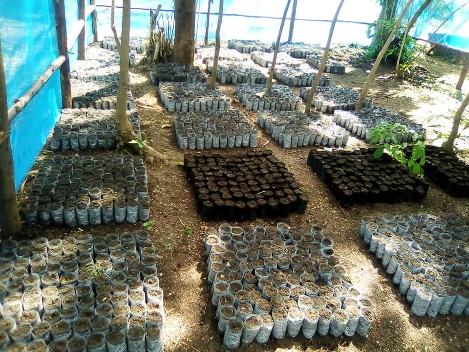
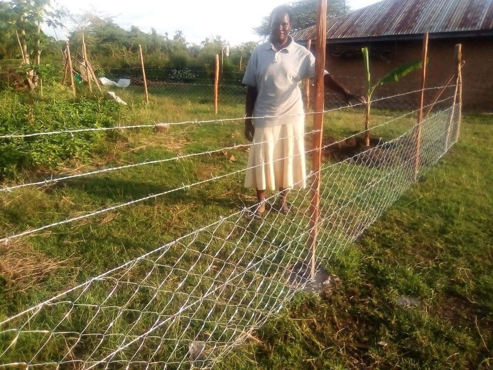
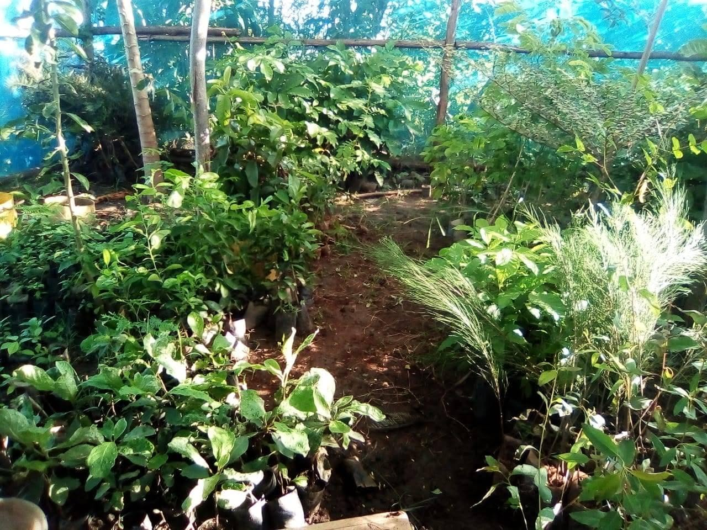
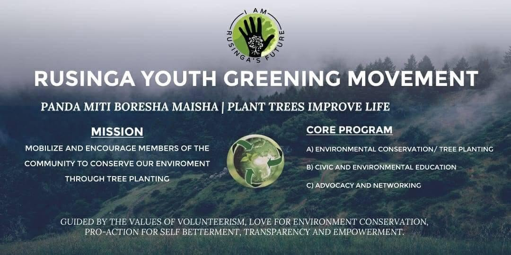
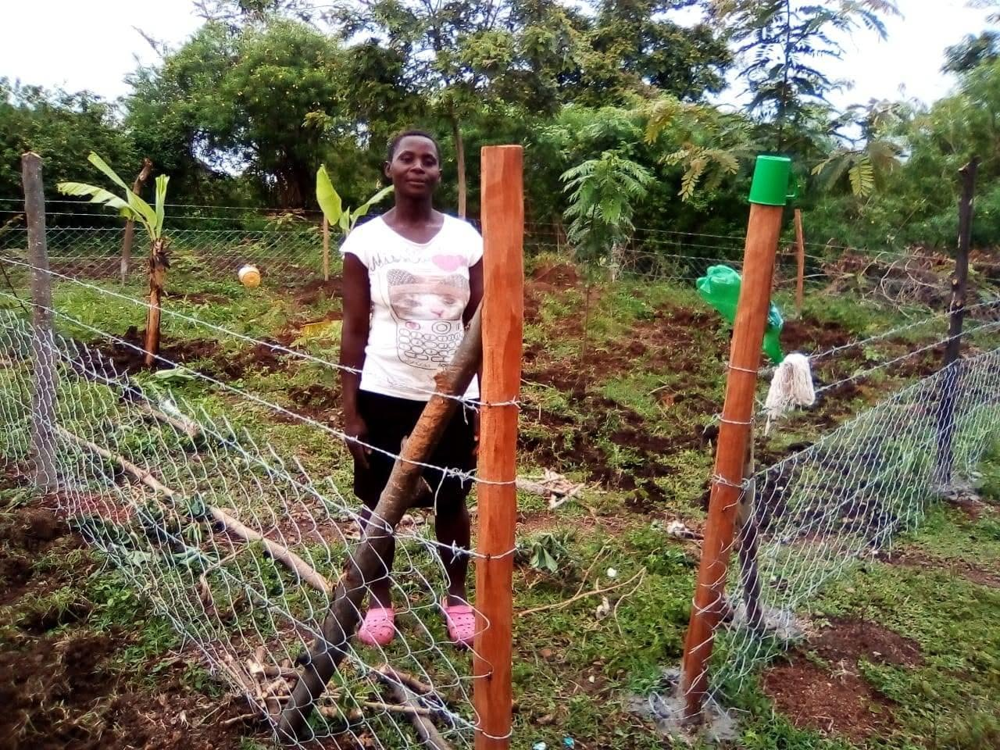
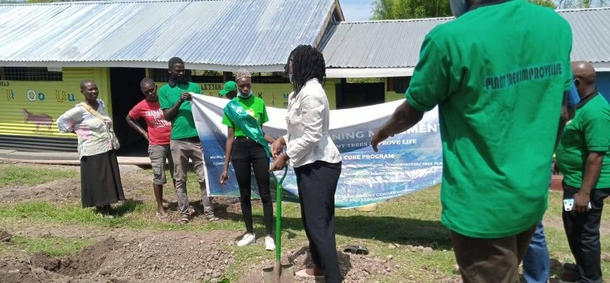
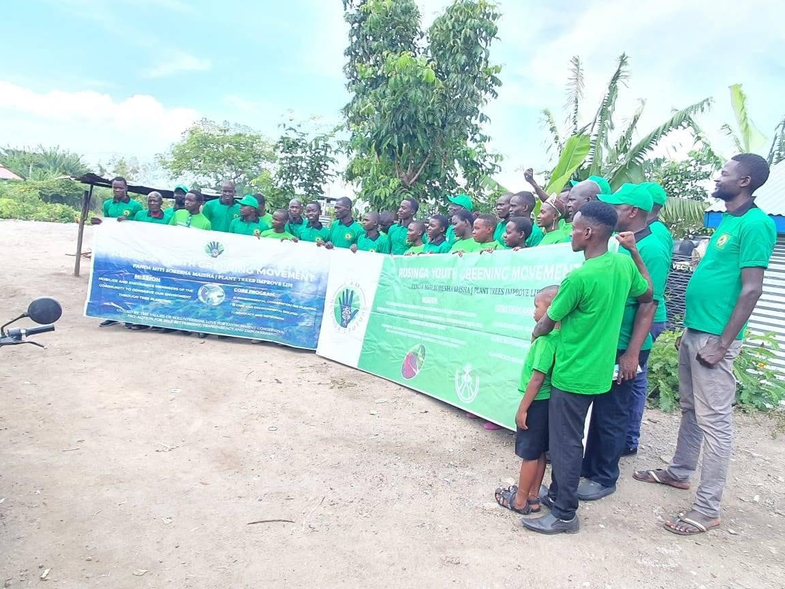
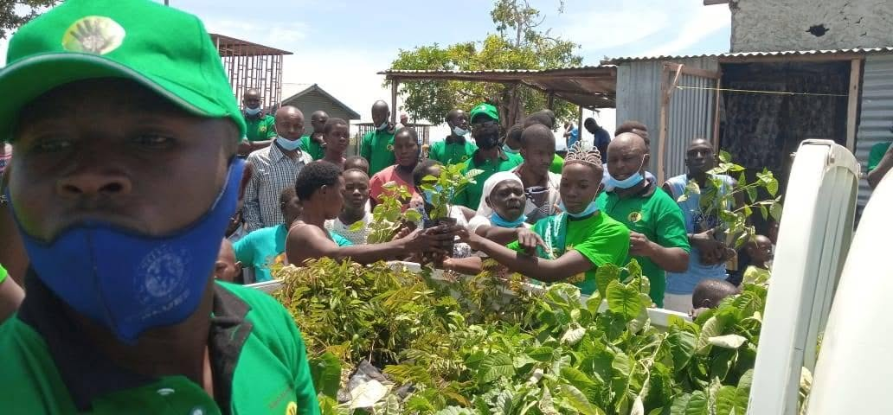
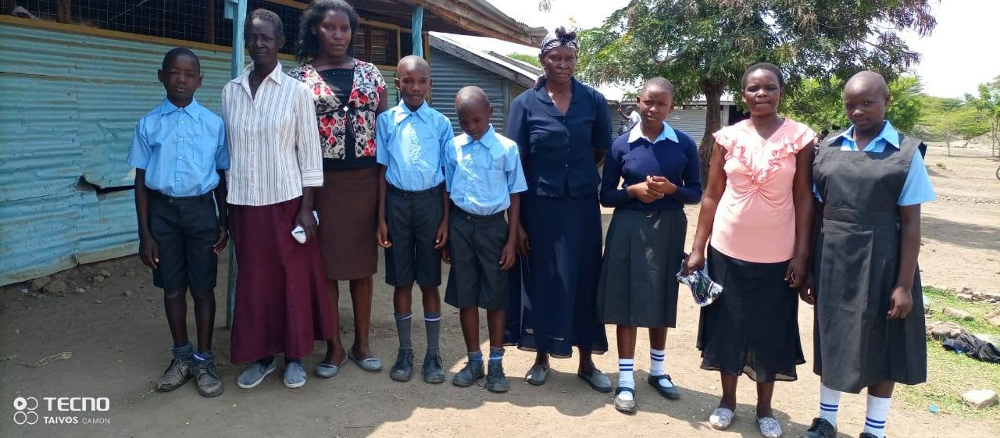
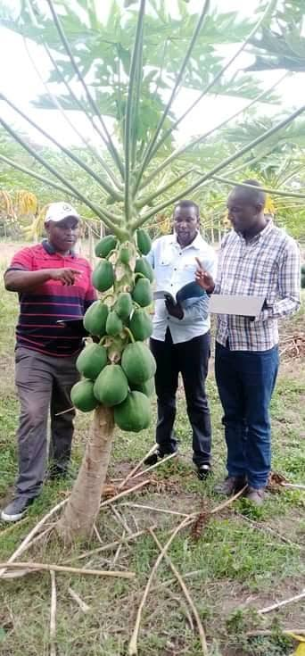
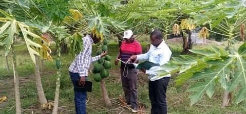
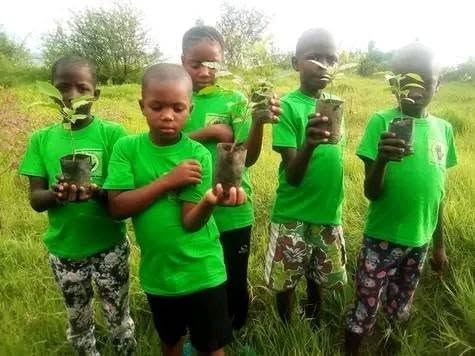


.jpeg)

.jpeg)


.jpeg)

.jpeg)

.jpeg)

.jpeg)

.jpeg)
.jpeg)


.jpeg)


.jpeg)


.jpeg)

Your support helps KWEPU expand tree planting, environmental education, agroforestry and community restoration projects.
Donate via M-Pesa
Account Number
Get in touch with Kamayoge Women Environmental Protection Unit. We welcome partnerships, support and collaboration for environmental restoration.
Email:
Ramanusojwang2002@gmail.com
Joseooko.o@gmail.com
Phone:
+254 724 761 771
+254 721 200 479
Postal Address:
P.O. Box 134, Mbita